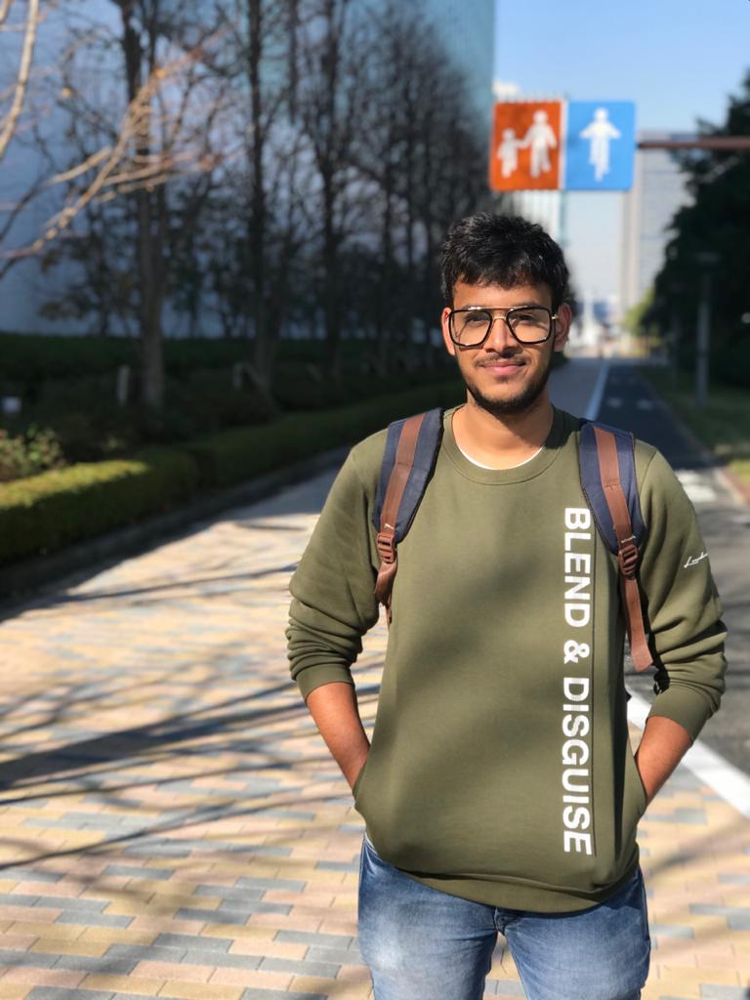

Hi, I am Prateek, an AI researcher and a Computer Science graduate of the Indian Institute of Technology Delhi. Until October 2023 I was an AI Researcher at Honda R&D's Innovation Lab in Tokyo, where I built driver-assistance and cooperative micro-mobility systems. That work led to six US patent applications.
Robotics is an essential part of my life. I like building systems that work in the real world: robot perception (object detection, monocular depth, SLAM), pedestrian trajectory prediction, path planning and real-time C++. I've also done a lot of work in Reinforcement Learning and Monte-Carlo Tree Search at Amii (Canada) and RIKEN AIP (Japan), and lately I've been reimplementing recent language-model papers from scratch. I would be happy to collaborate on interesting projects. Here is my Resume.

B.Tech in Computer Science & Engineering
Indian Institute of Technology Delhi, 2017 – 2021
Thesis: Traffic Adaptability with meta-learning (MAML) and continual learning, advised by Prof. Rijurekha Sen.
C, C++, Python, Java, OCaml, Bash, PyTorch, TensorFlow, Keras, scikit-learn, ROS, OpenCV, OpenGL, MPI, VHDL
Deep Learning, Pattern Recognition, Computer Vision, Artificial Intelligence, Reinforcement Learning, Learning for Cognitive Robot Intelligence, Programming Languages, Robotics Technology, Parallel Programming